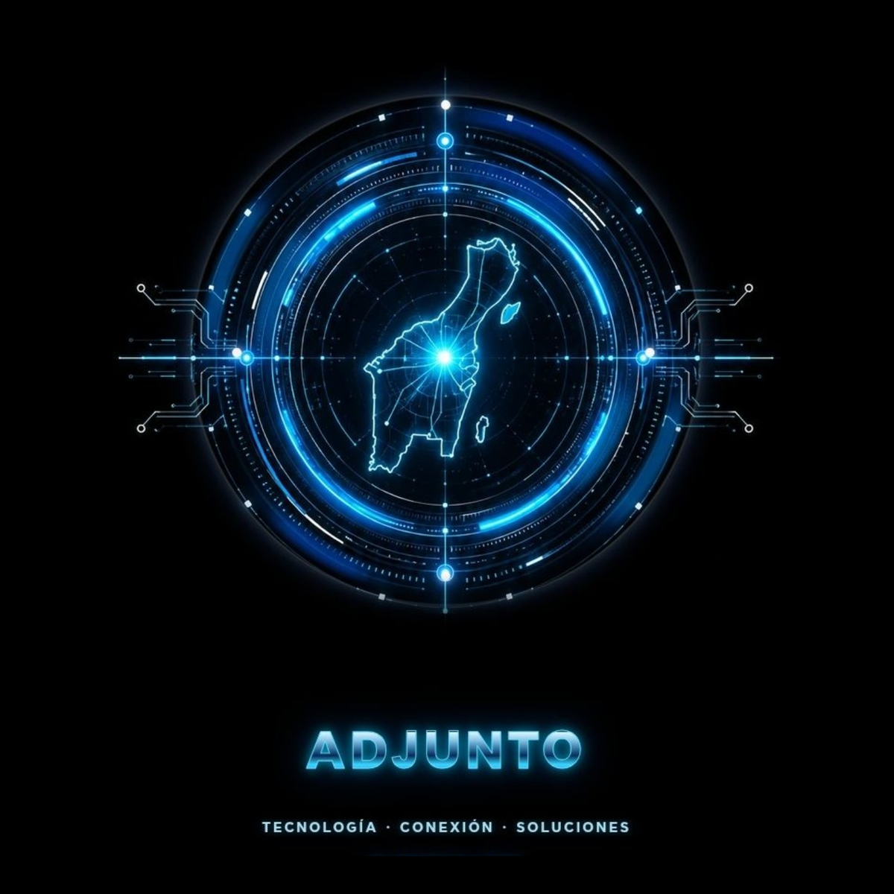
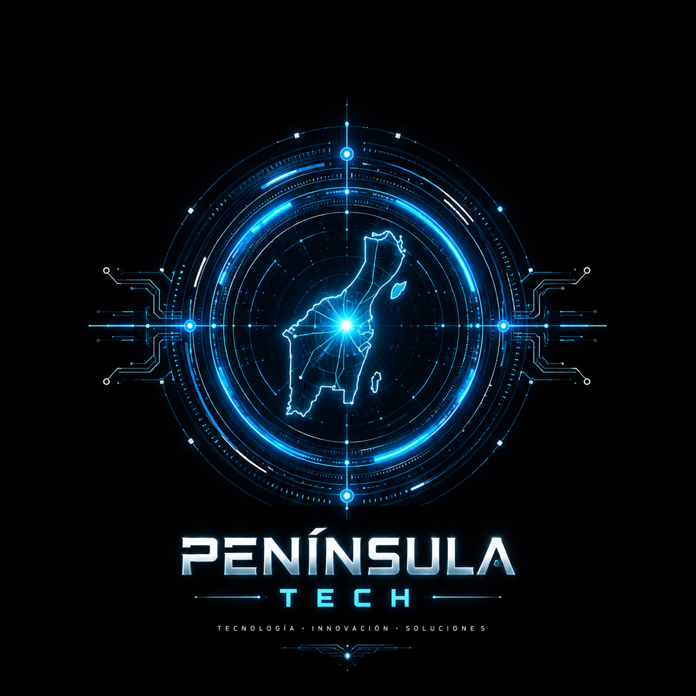

TECNOLOGÍA CREADA EN CANCÚN · MÉXICO
ADJUNTO BY PENÍNSULA TECH

ADJUNTO · PRODUCTO PRINCIPAL
Un espacio para conversar,
analizar y ejecutar.
ADJUNTO es la plataforma de Península Tech. Reúne interacción inteligente, archivos, seguimiento y ejecución de tareas en una experiencia diseñada para trabajo real.
TU ESPACIO DE TRABAJO
ADJUNTO listo
Conversa, analiza archivos y ejecuta misiones verificables desde un solo lugar.
SOLUCIONES
Una puerta de entrada.
Muchas especialidades.
Explora la categoría que necesitas y continúa en ADJUNTO. La plataforma centraliza el recorrido de clientes y profesionales.
No encontramos esa especialidad. Prueba con otra palabra.
CÓMO FUNCIONA
Menos vueltas.
Más claridad.
ADJUNTO organiza el recorrido entre quien necesita una solución y quien puede realizar el trabajo, manteniendo visibles los pasos esenciales de la operación.
TRAYECTORIA VISUAL
La experiencia también
se cuenta con imágenes.
Una selección del archivo histórico que forma parte del camino previo a Península Tech y ADJUNTO.
ARCHIVO HISTÓRICO · 2018Archivo histórico de Multiservicios de 2018. Estas imágenes documentan una etapa previa y no representan servicios ejecutados por ADJUNTO.

Se transforma la forma.
Permanece el propósito.
QUIÉNES SOMOS
No empezamos de cero.
Evolucionamos contigo.
Nuestra historia nace de la trayectoria que Heberto Mendoza inició en 1998, escuchando y atendiendo las necesidades de personas, hogares y negocios. Multiservicios fue parte de ese camino.
Hoy, Península Tech desarrolla ADJUNTO para llevar esa visión a una nueva escala: que los profesionales puedan ofrecer su talento y las personas encuentren cómo resolver sus necesidades.
El origen de la trayectoriaTrabajo, aprendizaje y adaptación a las necesidades del público.
Multiservicios de CancúnUna identidad propia y una visión integral de los servicios.
Península Tech · ADJUNTODe una experiencia de servicio a una plataforma de conexión.
1998 corresponde a la trayectoria de su impulsor; no a la fecha de creación de Península Tech o ADJUNTO.

PENÍNSULA TECHTECNOLOGÍA PARA OPERAR MEJOR.
PARA PROFESIONALES
Tu experiencia merece
un espacio digital.
ADJUNTO permite a profesionales iniciar su recorrido dentro de una plataforma preparada para conectar especialidades con necesidades reales.
El acceso continúa directamente en ADJUNTO.PERSPECTIVAS
Experiencia que se comparte.
Ideas para trabajar mejor.
Contenido sobre operación, oficios, tecnología y la evolución de Península Tech y ADJUNTO.
DOS CAMINOS. UN MISMO PUNTO DE ENCUENTRO.
¿Qué quieres
hacer posible?
Las acciones de clientes y profesionales continúan en la plataforma ADJUNTO.